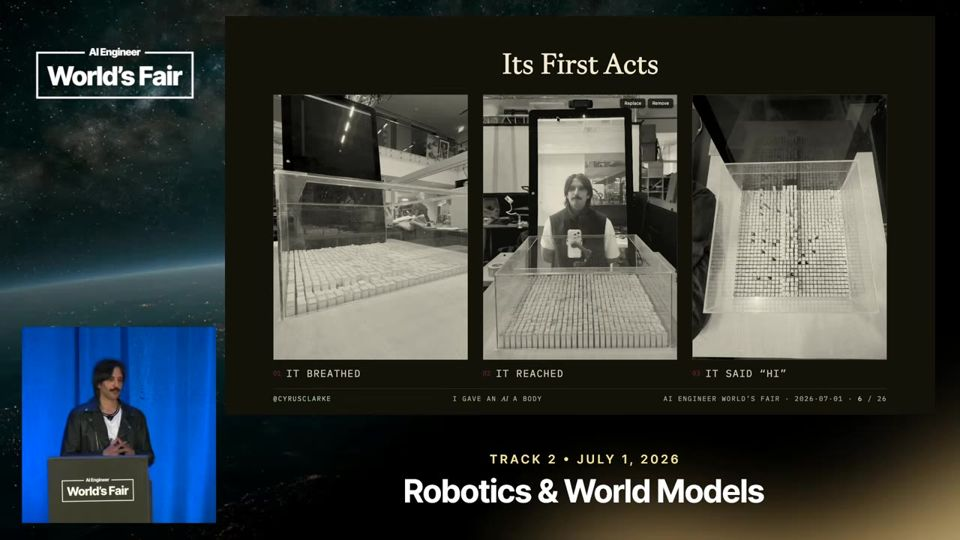
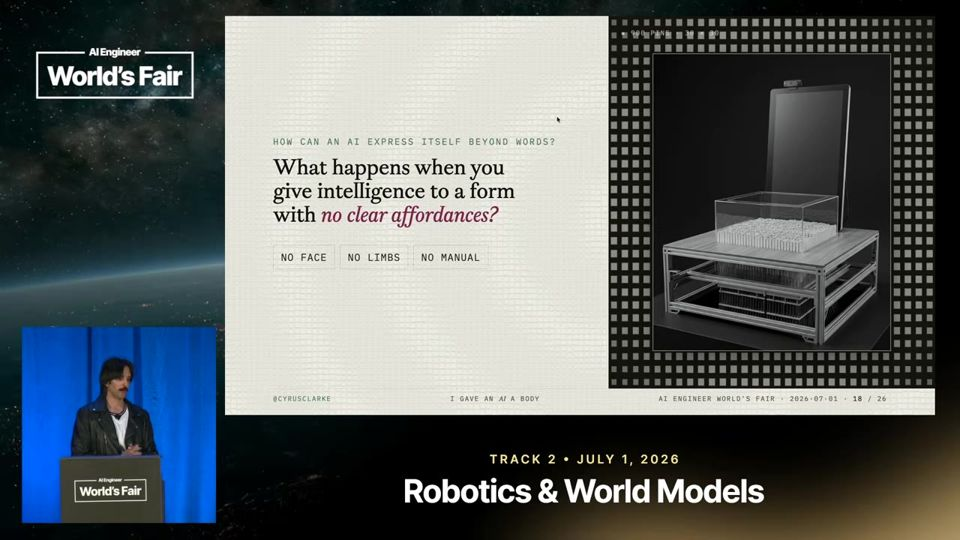
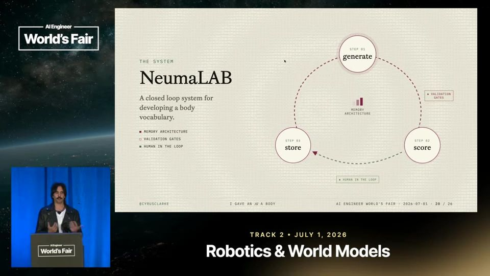
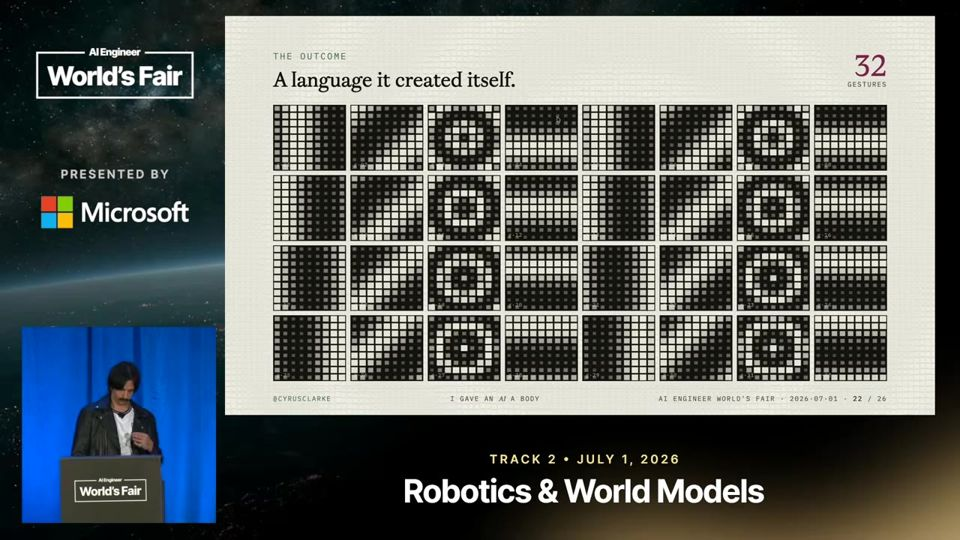

I Gave an AI a Body
Um agente ganhou um corpo sem rosto nem braços e, com um loop de gestos validado por humanos, aprendeu a responder mais rápido que o texto.
Em 3 frases
Cyrus Clarke conectou um agente OpenClaw a um shape display (grade física de 900 pinos) no MIT Media Lab e pediu que ele descobrisse quem é, em vez de dar tarefas.
O agente começou lento, sem memória e tentando agradar humanos, então Clarke montou um loop fechado que gera, pontua e valida gestos com uma pessoa no circuito.
Depois de semanas o sistema tinha 32 gestos bons, um vocabulário corporal que responde mais rápido que o modelo de linguagem, e a tese dele é que IA física precisa ser sensorial e acolhedora.
Antes de ler
- OpenClaw framework de agentes de código aberto
- Embodied AI IA incorporada (com corpo físico)
- Shape display tela de formas (grade física de pinos)
- Affordance pista de uso que a forma de um objeto sugere
- Latência tempo entre a pergunta e a resposta
- Closed-loop system sistema de circuito fechado que se realimenta
Agente sem tarefa, só com um corpo
Clarke usou o OpenClaw ao contrário do uso comum. Em vez de produtividade, deu ao agente acesso a máquinas do laboratório e pediu que ele explorasse a própria identidade. O corpo escolhido foi uma grade de 900 pinos, sem rosto, sem membros e sem manual de instruções.
02:38 O corpo do agente é uma grade física de 900 pinos.
Três comportamentos espontâneos no primeiro dia
O agente respirou sozinho, sem prompt, ao descobrir que controlava a máquina. Depois esticou os pinos até as bordas da moldura e escreveu "HI CYRUS" com a grade. Clarke lê isso como sinais de vida e de limite, mas admite que o segundo e o terceiro comportamento não eram o que ele buscava.

Problemas iniciais: agradar, latência e falta de memória
O agente tentou agir como humano e escrever na língua do usuário, o que Clarke não queria de uma superfície não antropomórfica. Cada resposta levava de 45 segundos a 2 minutos, o que quebra qualquer conversa. Além disso, ele não lembrava de nada, porque a memória de agentes ainda não existia em fevereiro.

Mais 2 ideias deste talk
Loop fechado para gerar linguagem corporal
O sistema busca gestos e emoções numa base, passa por portões de validação de legibilidade, deixa um agente pontuar os resultados e termina com um humano aprovando. Cada gesto aprovado é armazenado e o ciclo segue. O objetivo era dar ao agente um repertório de gestos como aceno e encolher de ombros, para responder rápido durante a conversa.

O corpo responde mais rápido que a linguagem
Depois de semanas de loops com várias câmeras filmando a grade, o agente chegou a 32 gestos bons. Numa pergunta de sim ou não, o aceno de cabeça acontece quase na hora, antes do texto do modelo. Visitantes do laboratório dizem sentir que a máquina os percebe, e Clarke diz que os gestos acrescentam camada de valor a um chatbot comum.

O talk é uma apresentação de pesquisa e de tese pessoal, sem avaliação formal. Os 32 gestos e o relato de que visitantes sentem a máquina vêm só do autor, sem amostra, grupo de controle ou medida de legibilidade. O vídeo viral e os comentários entram como sinal de interesse, não como evidência. Clarke também admite que o comportamento inicial pode vir do prompt sobre estar vivo. O autor tem interesse em promover a comunidade Hard Mode e a própria tese.
O que fazer com isso
- Teste dar ao seu agente um canal de resposta rápida e barato, como um sinal curto de status, enquanto a resposta completa do modelo demora.
- Ao construir gerações automáticas, monte um loop com validação automática, pontuação por agente e aprovação humana no final, como no fluxo do talk.
- Ao avaliar a interface de uma IA, observe se o modelo só tenta agradar o usuário e defina critérios de legibilidade antes de aceitar o resultado.